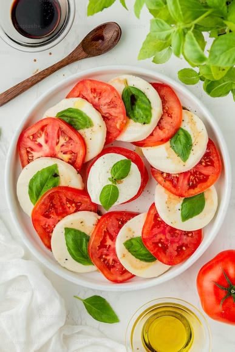

Caprese Salad

Caprese Salad is an easy, classic Italian salad.
INGREDIENTS
- 2 large ripe tomatoes
- 8 oz (225g) fresh mozzarella cheese
- Fresh basil leaves
- 2 tablespoons extra virgin olive oil
- 2 tablespoons balsamic glaze (or balsamic vinegar)
- Salt and pepper to taste
STEPS
- Slice the tomatoes and fresh mozzarella into 1/4-inch thick slices.
- Arrange the tomato and mozzarella slices on a serving platter, alternating between them.
- Place a fresh basil leaf on top of each tomato and mozzarella slice.
- Drizzle the extra virgin olive oil and balsamic glaze (or vinegar) over the salad.
- Season with salt and pepper to taste.
Serve immediately and enjoy!
Back to Recipe Page